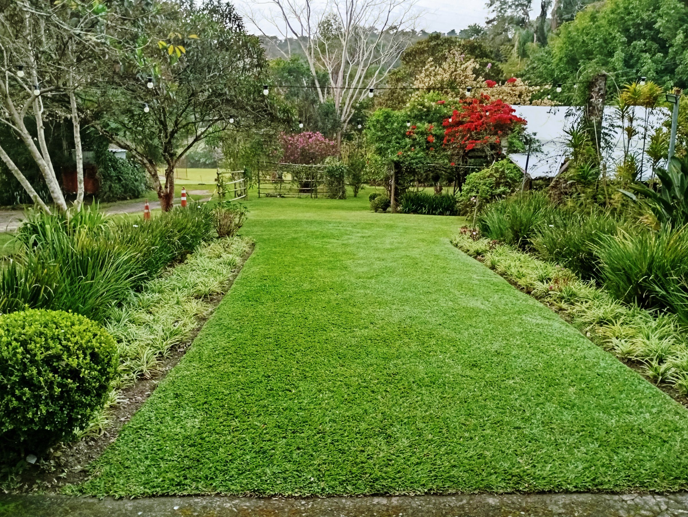
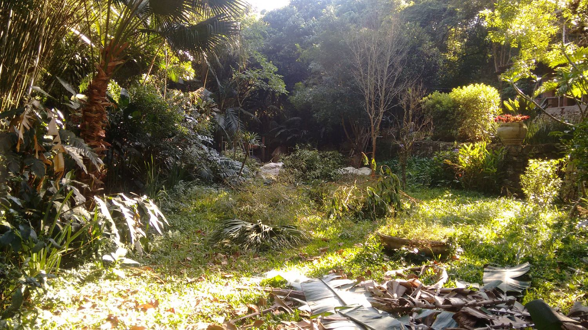
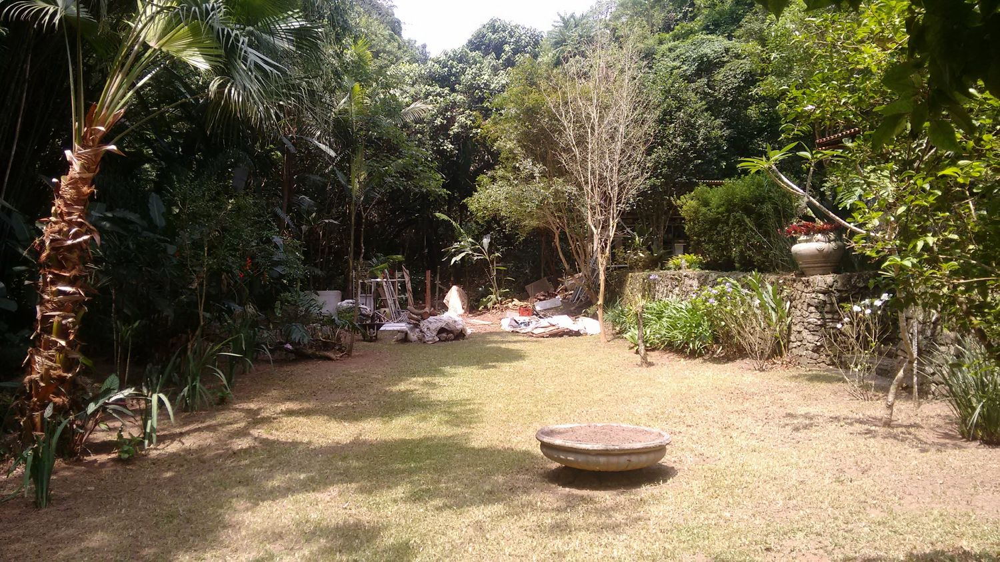
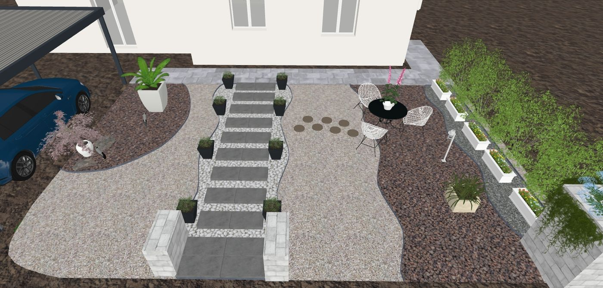
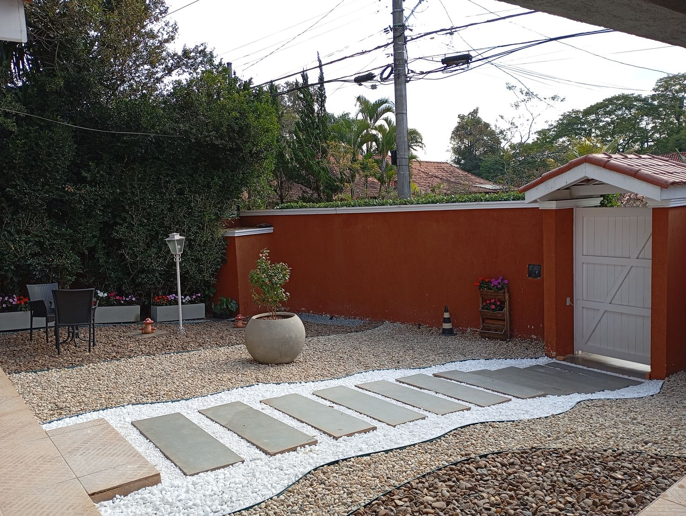
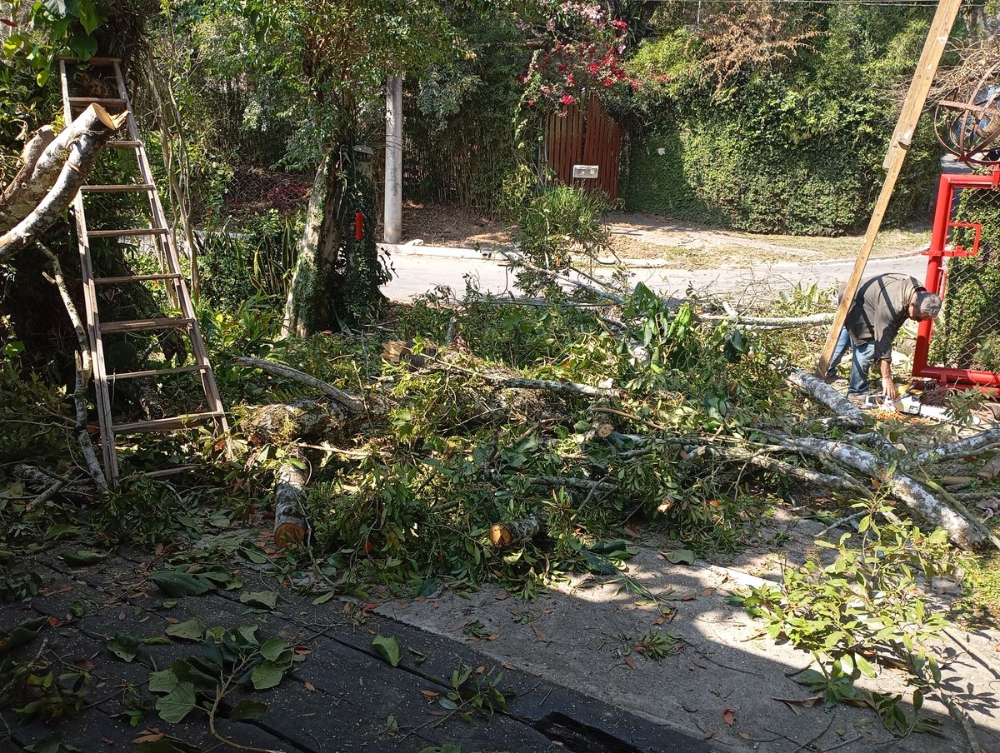
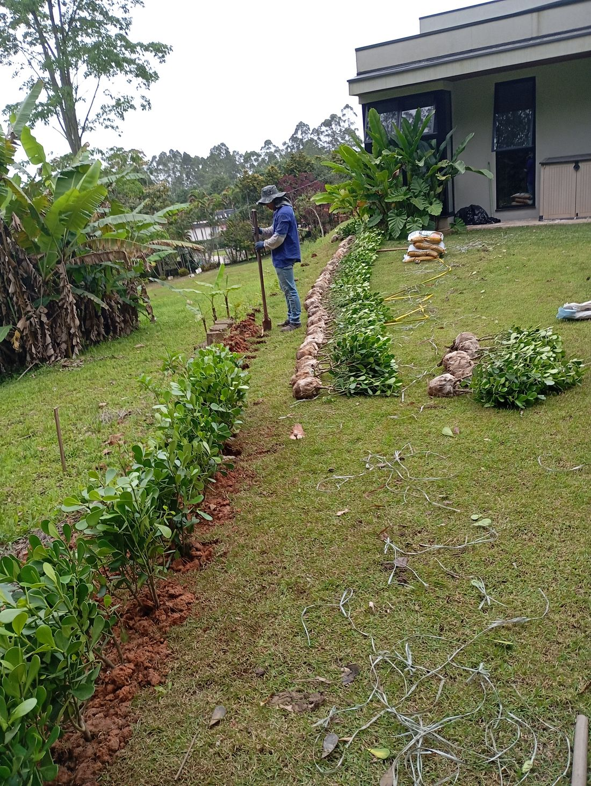

Corte de grama
Gramado aparado na altura certa, acabamento nas bordas e calçadas e o corte todo juntado antes de ir embora.

Carapicuíba, Granja Viana, Cotia e região · Residências, chácaras e condomínios
Corte de grama, poda, limpeza de terreno e manutenção feitos por quem vive disso. Você manda uma foto no WhatsApp e a gente te diz o que fazer e quanto custa.
Orçamento sem compromisso · Atendimento de segunda a sexta, 8h às 16h
O que fazemos
Gramado aparado na altura certa, acabamento nas bordas e calçadas e o corte todo juntado antes de ir embora.
Poda de limpeza, formação e redução. Cercas vivas no esquadro e árvore grande derrubada com segurança.
Roçada de mato alto, galhada cortada e material juntado em um ponto só. Terreno liberado para obra, venda ou uso.
Visitas programadas para o jardim nunca sair do ponto. Você aprova o plano e a gente aparece na data combinada.
Projeto em 3D, canteiro novo, forração, grama em placas, seixo e caminho de pedra. Da ideia ao jardim pronto.
Adubação, controle de pragas e recuperação de gramado falhado. O verde volta e fica.
Antes e depois
Nove trabalhos nossos. Escolha um no carrossel abaixo e arraste o cursor sobre a foto.


Antes DepoisLimpeza completa, poda e corte de grama · quinze dias entre uma foto e outra
Projeto
Em trabalho de paisagismo você vê o jardim antes de ele existir. Desenhamos a proposta, você aprova e a gente executa igual ao desenho.


No serviço
Sem terceirizar o que é difícil. Árvore grande, plantio longo, mutirão de limpeza — a equipe é a nossa.


Trabalhos
Toque em qualquer foto para ver maior.
Como funciona
Chama no WhatsApp, manda foto ou vídeo do jardim e conta o que te incomoda. Respondemos no horário de atendimento.
Passamos no local para medir e entender o terreno. Você recebe o valor fechado, sem surpresa depois.
Chegamos com ferramenta e equipe no dia marcado. Ao sair, a área fica varrida e o jardim pronto para usar.
Fale com a gente
É o jeito mais rápido de saber o que precisa ser feito e quanto custa. Sem compromisso.
Onde atendemos
Horário de atendimento
| Segunda-feira | 08:00 – 16:00 |
|---|---|
| Terça-feira | 08:00 – 16:00 |
| Quarta-feira | 08:00 – 16:00 |
| Quinta-feira | 08:00 – 16:00 |
| Sexta-feira | 08:00 – 16:00 |
| Sábado | Fechado |
| Domingo | Fechado |
Mensagens fora do horário são respondidas no próximo dia útil.